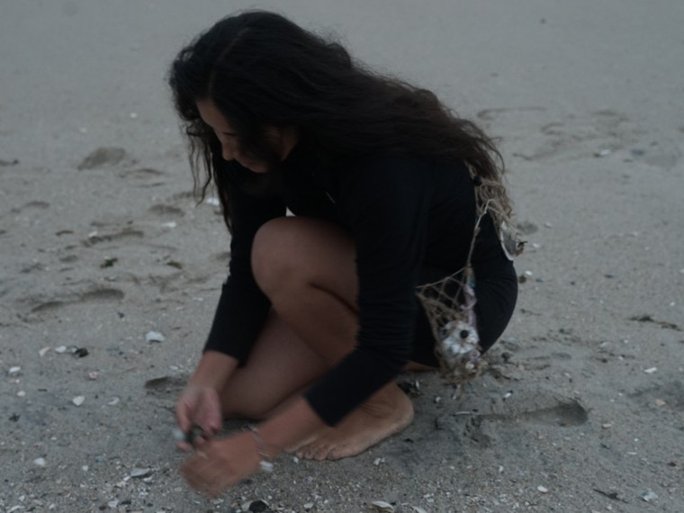

Ama is a project about Amas, a dying cultural practice in Japan of women free divers who traditionally dove for abalones and pearls. This project investigates myth, performance, and material culture through paintings, soft sculptures, and photographs.
